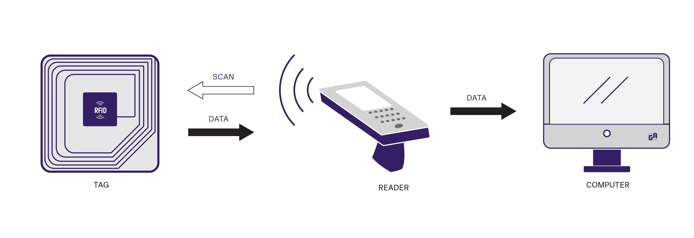
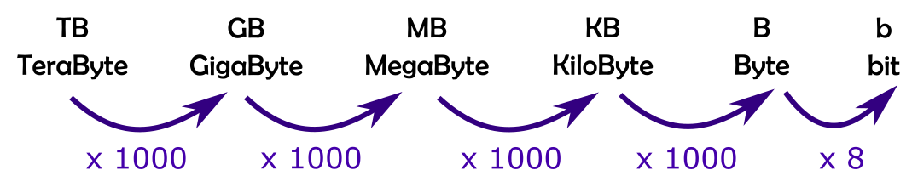
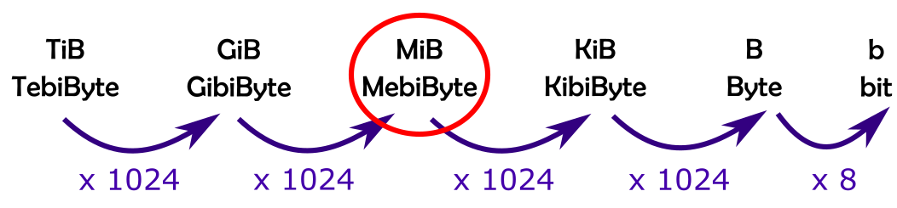
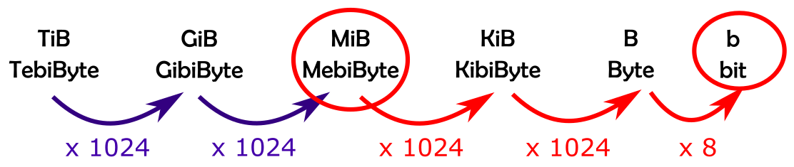
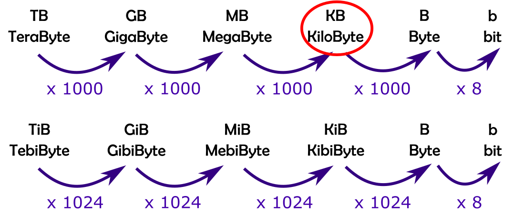
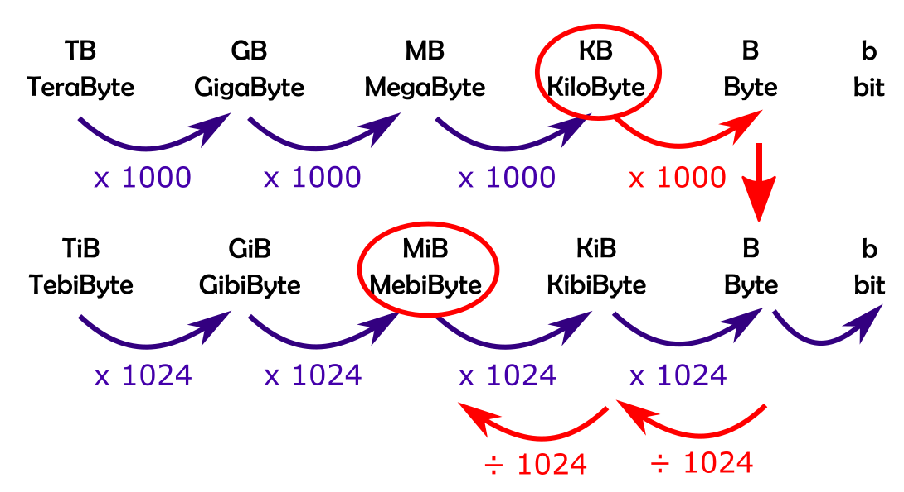
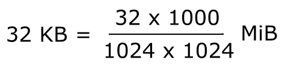

Features and functions of digital devices
Points to remember:
- Functions of a computer are to input, process, output and store data
- Features of computers are: portability, performance, storage, user interface, connectivity, energy consumption, expansion capability, security features
GPS
Points to remember:
- GPS uses satellites to get your location.
- GPS isn't related to 4G. It does not need an internet connection to work.
Biometrics
Points to remember:
- Biometrics involve the use of: a scanner/reader, software that will digitalise and analyse the scan, and a biometric database to save the records.
- Logging in using biometrics involves: scanning using a scanner, comparing the scan to the record from a database, if the scan matches the record then identification is confirmed.
Touch screen
Points to remember:
- A touchscreen is a type of display that can detect touch input from a user
- A touchscreen is also an output device as it can vibrate under the finger
- There are two types of technologies: capacitive or resistive
Sensor
Points to remember:
- A sensor records data from the surrounding environement (for instance temperature, humidity, light etc.)
- A sensor is an input device.
- Examples of sensors: temperature, humidty, proximity, light,
Memory: RAM and ROM
➙ Craig n Dave video here
Points to remember:
- RAM temporarily stores programs instructions for the CPU to access and process quickly
- RAM only holds instructions while the programs are running. It is cleared when the computer is turned off: it is volatile
- More RAM means that the computer will be able to run more programs in parallel or to run them faster
- ROM stores boot up instructions.
- ROM is read only when the computer starts up
- ROM will retain the data when the power is turned off: it is non-volatile
- Both RAM and ROM are types of memory. They are not used to store personal files, this is done by secondary storage
Secondary storage
Points to remember:
- Secondary storage is where your personal files, programs are stored
- Secondary storage is non-volatile: the data is retained after the computer has been switched off
- The main types of storage media are: optical, flash and magnetic
Processor
Points to remember:
- Secondary storage is where your personal files, programs are stored
- Secondary storage is non-volatile: the data is retained after the computer has been switched off
- The main types of storage media are: optical, flash and magnetic
RFID (Radio Frequency Identification)
Points to remember:
- A RFID system is made of two parts: a tag and a reader.
- The tag is made of an antenna, receiving the waves, and an electronic circuit, in charge of processing and storing the information.
- The tag exchanges the data stored on its chip with a reader via radio waves
- In passive RFID systems, the tag is powered by the reader (via electromagnetic waves sent to read the tag)
- Active RFID tags have an onboard energy source.

NFC (Near Field Communication)
➙ Webpage explaining the basics of NFC
Points to remember:
- NFC is based on the same technology as RFID but with a much shorter range
- NFC is used by metro cards, smart phones payment systems etc.
- Short range means that the power consumed is much lower and that the security is higher (less chance of intercepting the data)
QR Code
➙ Webpage about QR codes here here
Points to remember:
- QR codes are designed to be scanned using a camera to extract the information stored in the code
- The code itself is made up of square and rectangular modules arranged in a grid-like pattern
- A QR code can hold numerical digits, alphabets, Kanji characters, and byte/binary data. It can encode a maximum of 4296 alphanumeric characters
- A typical QR code consists of position markers, alignment markers, timing pattern, version information, format patterns, data area and quiet Zone.
Technological convergence
Points to remember:
- Technological convergence is the tendency for separate technology to be embedded into one device where previously we had several devices for each function
- Example of technological convergence: we used to have a camera to take photos, a computer to send emails and an ipod to play music. Now all these functions are embedded into one smartphone
Embedded systems and firmware
Points to remember:
- An embedded system is a computer that is designed to perform a dedicated function, usually as a part of a large system.
- We also use the term embedded system for the large system (for instance, a washing machine, a camera, a fridge ...)
- Firmware is the software used in embedded system to control the hardware
- Firmware is stores in any type of Read Only Memory (ROM, EPROM...)
Binary and denary units
Points to remember:
- A binary number system is a base-2 system
- A denary number system is a base-10 system.
- The bit is the smallest unit of data. It has two digits only: 0 or 1
- A nibble is made of 4 bits, for instance: 1100 is a nibble
- A byte is made of 8 bits, for instance: 10111001 is a byte
- A byte is written with a capital B, a bit with a small b
To convert between units, follow these steps:
- List the units in order from largest to smallest.
You can use a mnemonics to remember the order, like: The Gorilla Makes Kangaroo Barbecue biscuits.


-
Circle your starting unit. For instance if the question is: convert 23 MebiBytes to bits, circle MiB.

-
Follow the path to the finishing unit, multiplying or dividing as you go along.

To convert between binary and denary, follow these steps:
- List the units in order from largest to smallest.
You can use a mnemonics to remember the order, like: The Gorilla Makes Kangaroo Barbecue biscuits.
-
Circle your starting unit. For instance if the question is: convert 32 kiloBytes to MebiBytes, circle kB.

-
Follow the path to the finishing unit, multiplying or dividing as you go along.


Systems and application software
Points to remember:
- There are two categories of software: systems and application
- Application software are used to carry out tasks that the user is interested in doing such as writing a letter, creating graphs, sending an email...
- Example of application software include word processing, spreadsheet, graphics packages and web browsers
- System software helps the computer run better
- System software includes the Operating System, utility programs and drivers
Operating system
Points to remember:
- The OS is the core software that allows the computer to work
- The OS manages: devices, processes, users and security
- Managing devices means enabling the computer to communicate with peripherals (for instance it manages the queues at a printer)
- Managing processes includes managing memory and multitasking (for instance when several applications are open)
- Managing users refers to the different user accounts on a computer
- Managing security includes managing user names and passwords
Copyright and licensing
Points to remember:
- Open source software means that the source code can be viewed and modified. It is usually free (for example: Open Office)
- Proprietary software grants the creater of all the rights to distribute it. It is usually expensive to buy (for example: MS Office)
- Usually, proprietary software has more functionalities than open-source